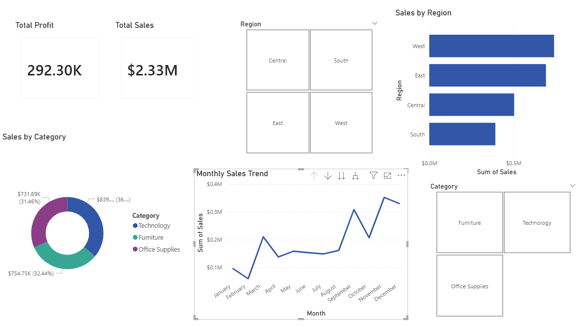

Interactive Business Intelligence application mapping $2.33M in global sales transactions. Purpose-built using Power BI to deliver deep regional and categorical diagnostics.

This specialized business analyst pipeline handles extraction, operational modeling, and interactive reporting phases cleanly. By consuming transactional tracking indices (`samplesuperstore.csv`), the underlying engine generates strategic analytical data splits across key operating departments.
Architecture Layout: Features independent custom time-series segmentation tracking revenue movements across seasonal spikes (March, September, November markets). Also provides categorical filters and cross-connected physical territory blocks mapping distribution across Core North American operational fields.
Note to Technical Recruiters: To review the relationships, data types, and explicit DAX formulas built into this project, download the source dataset and click the file asset above to launch the report inside Power BI Desktop.